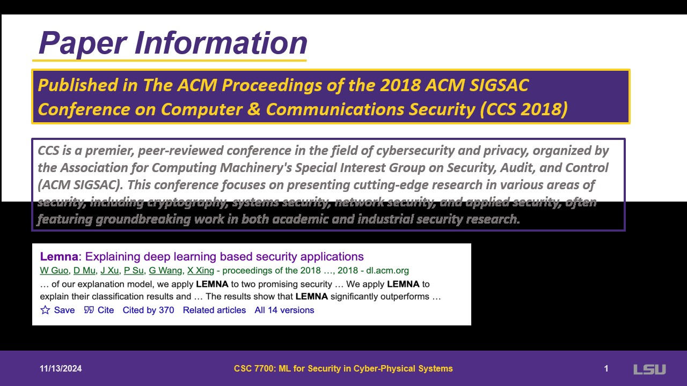
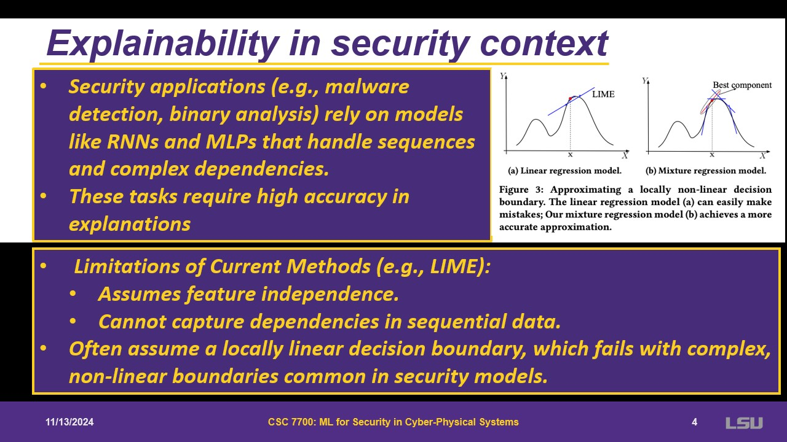
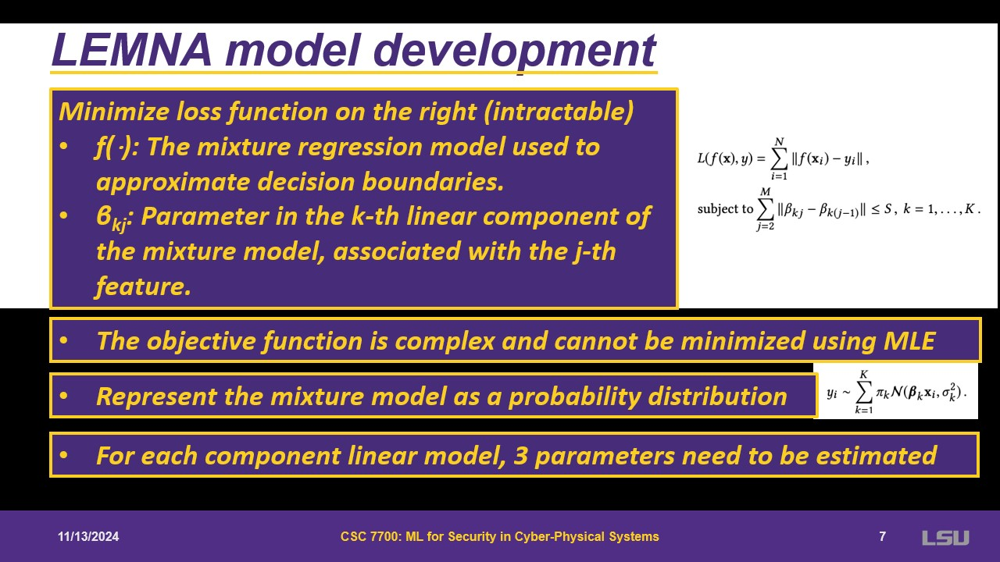
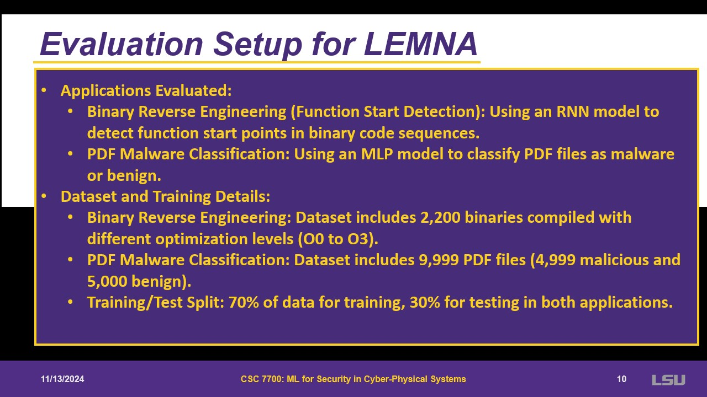
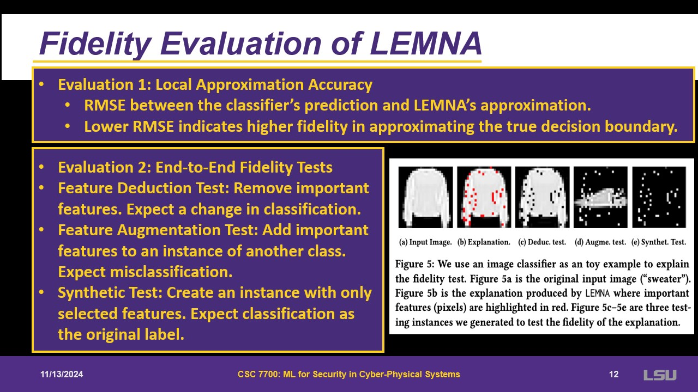
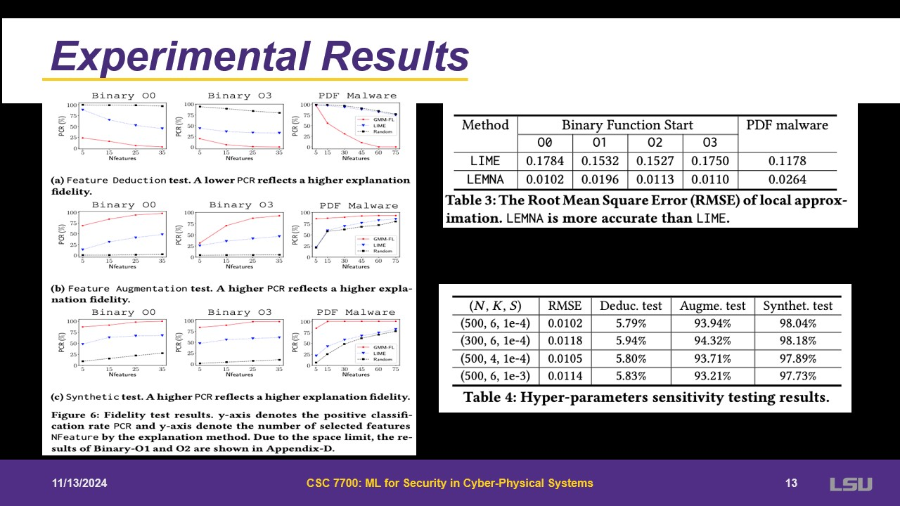
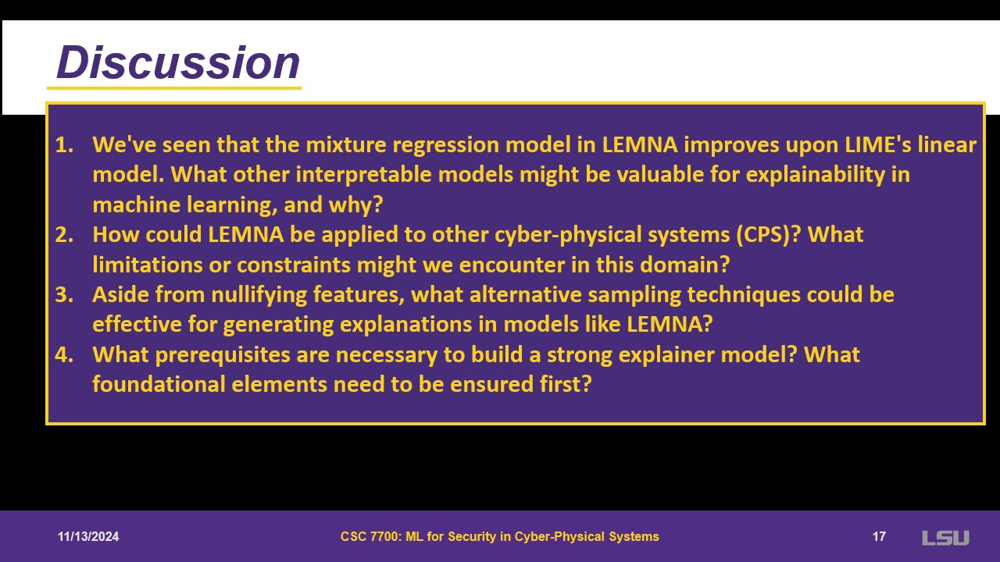

LEMNA:Explaining Deep Learning based Security Applications
Authors:Wenbo Guo, Dongliang Mu, Jun Xu, Purui Su, Gang Wang, Xinyu Xing
For class EE/CSC 7700 ML for CPS
Instructor: Dr. Xugui Zhou
Presentation by Group 8:Aleksandar Avdalović
Time of Presentation:10:30 AM, Wednesday, November 13, 2024
Blog post by Group 4: Betty Cepeda, Jared Suprun, Carlos Manosalvas
Link to Paper:
https://dl.acm.org/doi/pdf/10.1145/3243734.3243792
Summary of the Paper
This paper addresses the lack of explainability in deep learning models, which is particularly problematic for
security and safety-critical applications. Some models have already been defined, which are useful is some cases.
In others, such as security issues, these do not perform well. The paper also provides the application of LEMNA
on two tasks: a malware classifier and a function start detector for binary reverse engineering. The results show
the superior performance of LENMA compared to other existing methods.
The paper introduces LEMNA, a high-fidelity explanation method tailored for security applications, specifically to
enhance the interpretability of deep learning decisions.
Some key features that LEMNA presents are its interpretable features, its handling of feature dependency (contratry
to other common methods that usually assume feature independcy), local decision boundary approximatiom, and its
ability to overcome nonlinear boundaries.
Slide 1: Paper Information

Talking about the conference where the paper was published. Giving a broad overview of what
the paper represents in the industry.
Slide 2: Introduction – Explainable AI

Deep learning models are black boxes, decision making is not transparent and is not understandable
for human mind. Some attemps have been made for explaining models. Usually assume features of
the model are not dependent on each other. Sometimes missing data is ok, but for security it
causes big issues; fidelity is important.
Slide 3: Explainable ML

Explains how classification algorithm works. A goal is identifying key features that can explain the output.
One can use either black or white box. Black box are more desirable for security as you do not need to know what
happens behind. It somehow works as a linear regression, where each feature has a coefficient that will be used
for explainability.
Slide 4: Explainability in security context

An issue of linear regressions and pixels, they are in some sense independent because of the small size. Something
more complex is needed, that is still interpretable. The paper focuses on binary analysis, but it can be expanded
to other applications. LEMNA will have more samples, that allows to “see” more of the actual data.
Slide 5 & 6: LEMNA is here to help


LEMNA treats the models as boxes and then approximate them. First, they use Fused Lasso to force features to be
close to each other. Lasso is grouping the features that need to be considered a single group.
Then, they use a linear mixture model. It is a linear regression, but with k linear regressions. Some probability
will be assigned to each component. This represents the importance in the mixture. If multiple lines are done for
linear regression, one may be close to approximate a non-linear decision boundary.
Slide 7 & 8: LEMNA model development

The goal is to use f() as a mixture regression and fit the regression. However, it cannot be estimated with a min
max function. Regressions might depend on the nature of the data. Some assumptions are made; the model is a
probability distribution.
Three parameters are needed for the mixture: weights for components, parameters, and the variance in the components
of the linear regression. This is used with an expectation maximization in two steps. First comes the expectation step,
where it asks for each point, what is the probability that it belongs to K. This is estimated at every step. With the
output, during the maximization step, it is allowed to use maximum of the three parameters mentioned. This is done until
there is no significant difference.
Slide 9: Applying LEMNA for Explanations

After the training is done, other steps come to apply LEMNA. Some new data is created to simulate local variations.
Then they train for multiple mixture regression and select the linear component that best approximates the boundary.
With the coefficients, it ranks the features in terms of contribution to the model. Feature grouping can be tuned as
a hyper parameter; if it is infinite, parameters are independent.
Slide 10: Evaluation Setup for LEMNA

Used in binary reverse engineering, trying to see where a binary code starts, extract features from a pdf,
binary data optimization.
Slide 11: Example of LEMNA usage

As an example of LEMNA, there is a classifier and probability. LEMNA will have an ouput of the most likely
hex that will occur in that instance.
Slide 12: Fidelity Evaluation of LEMNA

Two evaluation metrics are presented. The local approximation accuracy is the difference between classifier,
prediction and LEMNA’s. Then, the end-to-end fidelity test. From the input picture, there are some important pixels
(red). Then they are reduced and trying to see if the classification changes. It adds something to the red pixels to
check if it changes the classification.
Slide 13: Experimental Results

For experimental results, LEMNA outperforms LIME in a factor of 10. For feature deduction test, it is giving different
results when this is run. For feature augmentation and synthetic tests, sufficient features can be identified to obtain 100%.
Slide 14: Applications of ML Explanation

For applications, LEMNA learned heuristics, learns from experts and highlights the most important things. It is also
capable of creating knowledge.
Slide 15: Targeted patching of ML classifiers

Some targeted patching can be done from false positives or false negative. Artificial opposite cases can be injected to lower
these metrics.
Slide 16: Teamwork

This slide emphasizes the aid the presenter had from its teammates.
Slide 17: Questions

Alotted time for questions from the audience.
Slide 18: Discussion

Proposed discussion questions for after the presentation.
Discussion
Discussion 1: We've seen that the mixture regression model in LEMNA improves upon LIME's linear model. What other interpretable models might be valuable for explainability in machine learning, and why?
Group 7 proposed the use of logistic regression methods.
The presenter also proposed the use of decision trees, or maybe quadratic models.
Discussion 2: How could LEMNA be applied to other cyber-physical systems (CPS)? What limitations or constraints might we encounter in this domain?
Group 1 mentioned that LEMNA could be applied to anomaly detection systems in CPS, taking data from machines in operation, to get info about that machine's current state.
The biggest constraint is time, given that the explanations generated should be delivered as fast as possible.
Discussion 3: Aside from nullifying features, what alternative sampling techniques could be effective for generating explanations in models like LEMNA?
Group 7 touched upon the addition of signal noise.
Discussion 4: What prerequisites are necessary to build a strong explainer model? What foundational elements need to be ensured first?
Group 5 said that the most important element would be feature extraction. The presenter in turn said that more important than that is the accuracy of the classifier.
Group 6 also pointed out that the quality of data will impact the model.
Questions
Q1: Group 1 asked: How efficient is fidelity testing using this method?
The presenter explained that for instance, it takes about ten seconds. Note that this is done in powerful machines.
The results are pretty efficient
Q2: Group 3 asked: How will this method fare against adversarial examples?
The presenter remarked that even if it is fed adversarial examples, the explanations will be based on the original trained model.
p>Q3: Group 3 asked: Can this method be affected by overfitting?
The presenter stated that no, but it can be possible.
Q4: Group 3 asked: Which deep learning models did the authors use to develop this method?
The presenter indicated that mostly RNNs and MLP models
Q5: Group 3 and Group 6 asked: Can this method be used to compare a GAN generated dataset to a real dataset?
The presenter revealed that yes, you definitely can use this method to compare the two datasets, but probably just that. This is a very interesting topic that can be researched upon.
Q6: Dr. Zhou asked: Does this method need the creation of another model? How does it identify the importance of the features? Can this model identify another solution?
The presenter mentions that you need to build a model that can calculate the coefficients and analyze them. The model can identify a different set of most important features, but they probably will not be very different.
Q7: Group 7 asked: How did the authors define the hyperparameters? How would changing them affect the results?
The presenter responded that as long as the S parameter stays small, the values of the other parameters could change and it would not affect much.
{kind=link}
{kind=link}
{kind=link}
{kind=link}
{kind=link}
{kind=link}
{kind=link}